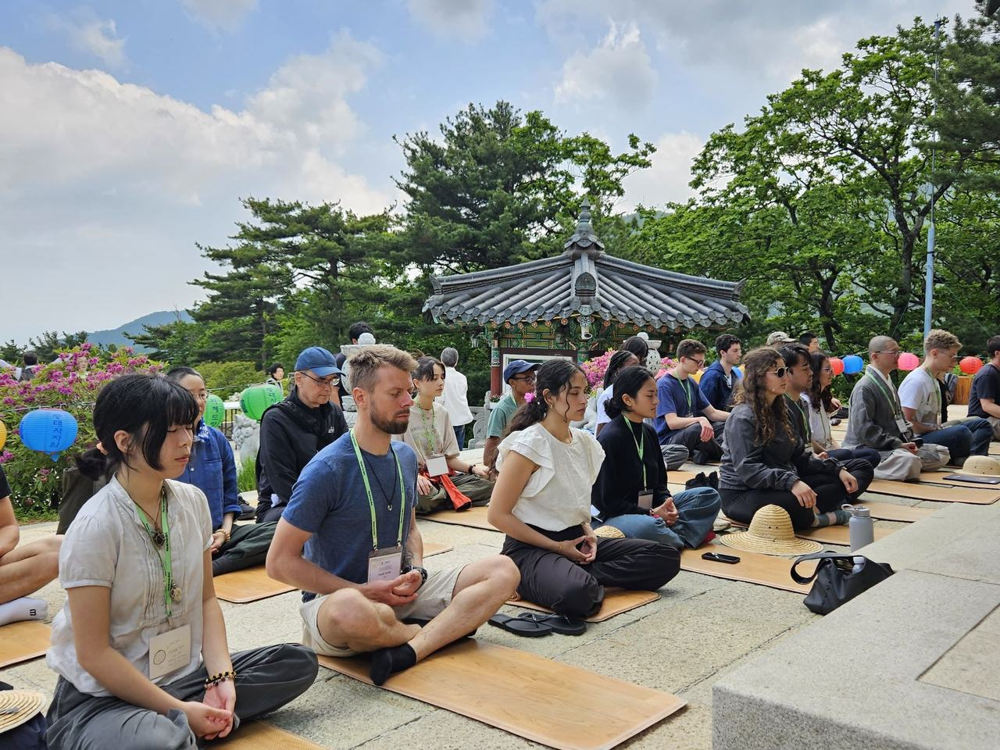

Every program is offered freely, by donation. Dates, availability, and registration come straight from Retreat Guru — staff update it in one place and it appears here.

Integration note for the demo: this is Retreat Guru's generic embed (what Squarespace uses today). In WordPress we'll test the official plugin first — it renders the same programs as real pages with better styling and search visibility — and keep this embed as the fallback. Direct link, always: dharma-gates.secure.retreat.guru.
Inspired by the Buddha's teachings on sila (morality) and his emphasis on generosity as a spiritual practice, we have chosen not to require any charges or suggest specific payment amounts for our retreats. We fully cover all expenses related to the retreat, including meals, housing, rental costs, and any teacher fees. Rather than offering a sliding scale or suggested donations, we offer all retreats and programs as a gift, freely accessible to all participants, without obligation of payment.